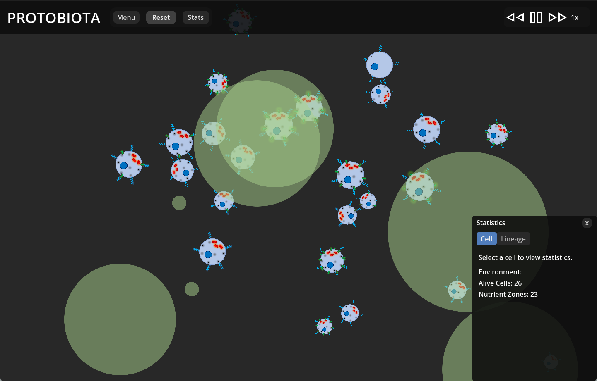

User Guide​
Table of Contents
Quickstart Guide
To get started with Protobiota, go to the following link and download the corresponding zip file for your operating system:
https://github.com/MylesScholz/A-Life-Capstone-Project/releases/tag/v1.0.0Unzip the contents of the file into the same directory on your computer. Then, simply double-click the executable to launch Protobiota.
The user interface is described in detail below, as well as some details about the underlying systems of the simulation.
User Interface
Main Menu
Protobiota opens on its main menu (pictured below). There are three buttons on this page: "Start New Simulation", "Settings", and "Quit". "Start New Simulation" will create a new simulation and take you to the main simulation view. "Settings" will open the settings menu without starting a new simulation. Lastly, "Quit" will close Protobiota. This does not save your parameters or settings.
Simulation View
The main simulation view shows the full environment in which cells are confined (pictured below). There are two interface panels: the navbar at the top of the window and the statistics panel, which is in the bottom right of the window by default.
The navbar has several controls for the simulation: the simulation title ("Protobiota"), "Menu", "Reset", "Stats", and the speed controls. Clicking on the simulation title will take you to the main menu. The "Menu" button opens and closes the settings menu while the simulation is ongoing. The "Reset" button creates a new simulation with updated parameters. The "Stats" button opens and closes the statistics panel. The speed controls allow you to pause, speed up, or slow down the simulation. The left-facing double arrows reduce the simulation speed by half, and the right-facing double arrows double the speed. The vertical bars pause the simulation, and while paused, the right-facing triangle unpauses.
The statistics panel shows information about cells and the environment as a whole. It has two tabs: "Cell" and "Lineage". The "Cell" tab always shows the current number of living cells in the environment and the total number of nutrient zones created since it began. You can click on a cell directly to select it, and the "Cell" tab will display some of its internal state information, such as its age, size, and available resources (pictured below). When you do this, the view will zoom in on the selected cell and follow it as it moves. Keyboard shortcuts to toggle this tracking or clear the selection entirely will also appear in the top left of the screen.

The "Lineage" tab displays the relationships between cells, living and dead, in the current simulation. By default, it selects the "last universal common ancestor" (LUCA), which is the theoretical organism from which all life originates. You can select related cells by clicking the blue circles in the "Parents" and "Children" sections of this tab or by clicking living cells directly. Doing either will also select the cell in the "Cell" tab. Dead cells will appear in an inset when selected. The following images show the "Lineage" tab when LUCA is selected and when a dead cell is selected, respectively.
Settings Menu
You can open the settings menu either from the main menu (pictured below) or from the simulation view. It has a "Quit to Menu" button in the bottom left that closes the current simulation (if there is one) and returns you to the main menu. If the menu is open from the simulation view, the X button in the top right will simply close the settings menu without ending the simulation.
In its main area, the settings menu has three tabs: "General", "Keybindings", and "Parameters". You can set some preferences for the user interface through the settings in the "General" tab. The "Keybindings" tab shows a list of keyboard mappings for various simulation and UI controls. Finally, the "Parameters" tab allows you to set some of the values on which the simulation is based, such as the number of initial cells and nutrient zones. See the Parameters section below for more details.

Cell Structures
A distinguishing feature of Protobiota is the system of cell structures and their interactions that define cell behavior. Cells are entirely composed of five types of structures: cell membranes, flagella, nuclei, mitochondria, and ribosomes. The presence of each cell structure and their behavior is determined by the cell's genome, and each structure acts independently of the others. For details about the Genome, see the Genome section below.
The structures create cell behavior by "activating" based on the cell's current state. Generally, each cell structure has an "activation threshold", which is the proportion of nutrients, energy, or both that the cell needs for that structure to activate. When a structure activates, it updates the cell's state in some way, which alters the behavior of the cell. The activation conditions and effects can be modified by genes. The following diagram illustrates the cell structure activation cycle.
All cell structures also have creation and maintenance costs in both nutrients and energy. The resource costs for reproduction are the sum of the creation costs of all the cell's structures. The homeostasis costs--the amount of nutrients and energy a cell must spend to stay alive--are the sum of the maintenance costs of all the cell's structures.
Cell Membrane
The cell membrane is the outer layer of the cell. In biology, it separates the internal environment of the cell from the outside, controls the transfer of chemicals in and out, detects external conditions, and holds the cell together. As such, the cell membrane is the only structure a cell must have to survive in the simulation. The cell membrane also controls cell growth and manages nutrient receptors embedded in its surface.
The following are the sprites for a cell membrane with and without receptors.
A cell membrane activates when its nutrients and energy both meet or exceed a certain proportion of their respective maximum values. This proportion is the activation threshold of the cell membrane. When its membrane activates, the cell attempts to grow in size. The cost of growth is multiplied by the change in area the cell would undergo if it grew at its growth rate. The cost of growth per unit of area and the growth rate are simulation parameters. If the cell does not have enough nutrients or energy to grow, the cell membrane activation will fail with no consequence.
Receptors are an additional feature of cell membranes that detect nutrients in the environment. The number of receptors is genetically determined, and the membrane spaces them evenly around its perimeter. Each receptors will activate individually whenever it intersects with a nutrient zone. The cell membrane tracks the position vectors of all activated receptors in each moment and updates the cell state with that information. A cell's flagella use these vectors to direct cell movement.
Flagella
Flagella are hair-like structures around the outside of a cell that spin like a turbine to enable movement. In the simulation, flagella operate only on energy, aside from maintenance costs. Their activation threshold is the proportion of a cell's energy maximum that it must have for the flagella to activate. Activation costs a fixed amount of energy, which is a simulation parameter. When the they activate, the flagella apply a force on the cell in the direction of the most activated nutrient receptors. If there are no activated receptors, the flagella move the cell in a random direction. The magnitude of the force is a product of the cell's size and a simulation parameter.
The following is the sprite for the flagella.
Nucleus
In Protobiota, the nucleus triggers reproduction and regulates mutations. In real life, it also holds genetic information and has many more functions related to protein production and delivery, but these are outside the scope of this simulation.
The following is the nucleus sprite.
To trigger reproduction, nuclei have an activation threshold that requires a cell to have a certain proportion of its maximum nutrients and energy. Additionally, a cell must have enough nutrients and energy to meet its reproduction costs, as determined by the creation costs of its cell structures. When the nucleus activates, the cell dies, and two nearly identical child cells are created. The children are nearly identical because they initially have the same genome as the parent cell, but there is a chance for mutations to occur.
The nucleus regulates mutations through two properties: protected genes and mutation chances. The nucleus sets the number of genes covered by the genome's protected section. The nucleus can also add mutation chances during reproduction. See the Genome section for details.
Mitochondria
The mitochondria convert nutrients into energy. In Protobiota, this represents the biological process of digesting macromolecules through respiration. The mitochondria were designed to be very similar but opposite to the ribosomes, which convert energy into nutrients. As such, they share the same systems for activation and conversion between the resources.
The following is the sprite for the mitochondria.
Mitochondria activation is more complex than that of the cell membrane, nucleus, or flagella. The activation threshold still represents a proportion of maximum resources beyond which the structure will activate, however this may be either nutrients or energy (not both) and high-pass or low-pass. Certain genes set the mitochondria to respond to one of the resources, and other genes set the threshold type (high-pass or low-pass). A high-pass threshold will trigger activation when the resource value exceeds the activation threshold, and a low-pass threshold will trigger when the resource is less than the threshold. This flexibility allows cells to optimize metabolizing nutrients and maintaining homeostasis.
When the mitochondria activate, they convert nutrients into energy with some modifiers. Firstly, mitochondria have an efficiency property, which is the proportion of nutrients that are not lost as waste during conversion. Secondly, they have a strength modifier, which is a genetically defined multiplier on amount of nutrients to convert. Lastly, mitochondria use the cell's nutrient-to-energy conversion rate to translate from nutrient units into energy units. This conversion rate is set by either the mitochondria or the ribosomes, depending on which occurs first in the cell's genome.
Ribosomes
The ribosomes convert energy into nutrients. In Protobiota, this represents the biological process of protein production. The ribosomes were designed to be very similar but opposite to the mitochondria, which convert nutrients into energy. As such, they share the same systems for activation and conversion between the resources.
The following is the sprite for the ribosomes.
Ribosome activation is more complex than that of the cell membrane, nucleus, or flagella. The activation threshold still represents a proportion of maximum resources beyond which the structure will activate, however this may be either nutrients or energy (not both) and high-pass or low-pass. Certain genes set the ribosomes to respond to one of the resources, and other genes set the threshold type (high-pass or low-pass). A high-pass threshold will trigger activation when the resource value exceeds the activation threshold, and a low-pass threshold will trigger when the resource is less than the threshold. This flexibility allows cells to optimize metabolizing nutrients and maintaining homeostasis.
When the ribosomes activate, they convert energy into nutrients with some modifiers. Firstly, ribosomes have an efficiency property, which is the proportion of energy that is not lost as waste during conversion. Secondly, they have a strength modifier, which is a genetically defined multiplier on amount of energy to convert. Lastly, ribosomes use the cell's nutrient-to-energy conversion rate to translate from energy units into nutrient units. This conversion rate is set by either the mitochondria or the ribosomes, depending on which occurs first in the cell's genome.
Genome
The genome is the genetic material of a cell, and it sets the cell's structures and behavior. It consists of an ordered list of two types of genes: structure genes and modifier genes. Structure genes correspond to each type of cell structure, and they indicate the presence of that structure in the cell. Modifier genes apply particular values to the parameters of the preceding structure. The following diagram illustrates this property. Each cell structure has default values for its parameters, but modifier genes overwrite them.
Mutations
During reproduction, the genome may be mutated. Internally, the cell maintains a list of chances (probabilities from 0 to 1) that a mutation will occur. When a cell reproduces, each chance is tested, like rolling a die multiple times. For each success, the genome will be mutated. Every cell has at least one mutation chance, which you can set as a simulation parameter. When modified by certain genes, the nucleus can add more of these mutation chances. To mitigate mutations, the genome also has a protected section. This section starts at the first gene and covers a number of genes determined by the cell's nucleus. Mutations cannot occur in this section.
There are three types of mutations: additions, deletions, and replacements. Additions insert a gene randomly into the unprotected section of the genome or at the end if the entire genome is protected. Deletions remove an unprotected gene, and replacements delete an unprotected gene and create a new one in its place.
When a mutation creates a random gene, there is chance it will be a structure gene and a chance it will be a modifier gene. You can set the probabilities of each type of structure gene as simulation parameters, and the remaining chance will be evenly divided among the modifier genes.